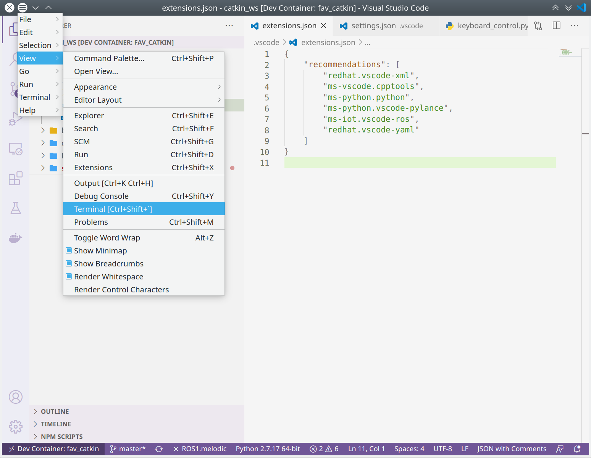
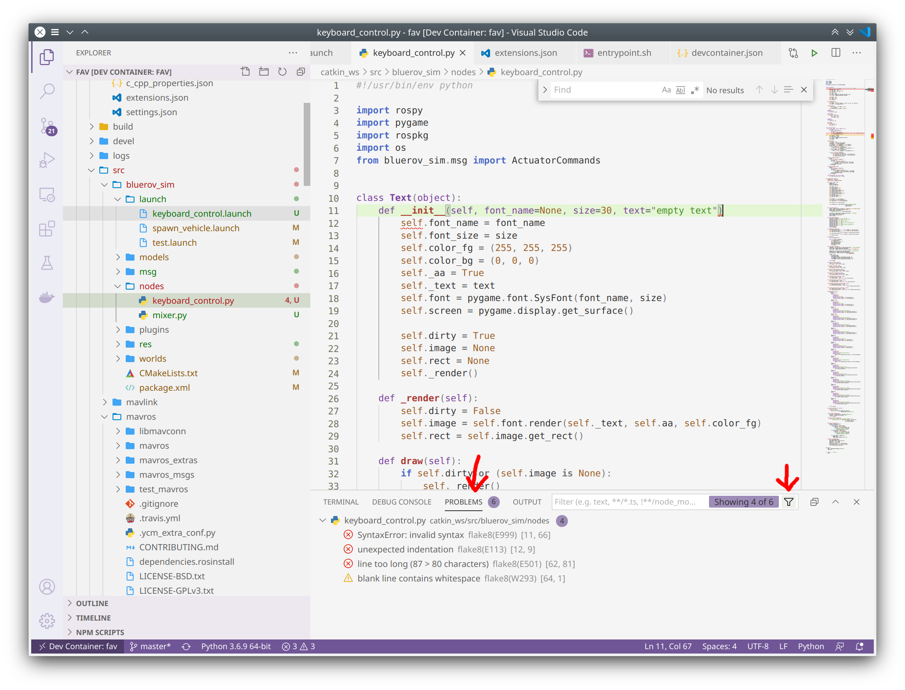

IDE Setup
For this class we recommend Visual Studio Code. Of course, you can use any IDE you like and that works for you.
Installation
Ubuntu has snap preinstalled so probably the easiest way to install VS Code is to execute
sudo snap install --classic code
For more detailed instructions and alternative installation options see the VS Code Documentation.
VS Code Project Configuration
If you open a folder with VS Code you can have project specific settings stored in a .vscode directory. The basic configuration files are the settings.json and the extensions.json. There might be some other fies present in a .vscode directory depending on the extensions installed.
We provide a basic version of both the above mentioned files.
Create the
.vscodedirectorymkdir ~/fav/catkin_ws/.vscode && cd ~/fav/catkin_ws/.vscode
Create the following files:
{
"recommendations": [
// generate docstring snippets for python
"njpwerner.autodocstring",
// python language support
"ms-python.python",
// cpp language support
"ms-vscode.cpptools",
// yaml language support
"redhat.vscode-yaml",
// ROS extension
"ms-iot.vscode-ros",
// xml language support
"redhat.vscode-xml",
// syntax support for cmake files
"twxs.cmake",
// generate doxygen comments
"cschlosser.doxdocgen"
]
}
{
"python.languageServer": "Pylance",
"python.formatting.provider": "yapf",
"python.formatting.yapfArgs": [
"--style={based_on_style: pep8, column_limit: 80}"
],
"python.linting.enabled": true,
"python.linting.pylintEnabled": false,
"python.linting.flake8Enabled": true,
"python.linting.flake8Args": [
"--max-line-length=80"
],
"python.analysis.completeFunctionParens": true,
"clang-format.language.cpp.enable": true,
"autoDocstring.docstringFormat": "google",
"files.insertFinalNewline": true,
"yaml.format.enable": true,
"yaml.validate": true,
// use google style per default
"C_Cpp.clang_format_fallbackStyle": "Google",
// never fall back to tag parser
"C_Cpp.intelliSenseEngineFallback": "disabled",
"C_Cpp.codeAnalysis.clangTidy.enabled": true,
// use compile_commands.json specified in c_cpp_properties.json
"C_Cpp.codeAnalysis.clangTidy.useBuildPath": true
}
Open the Workspace
cd ~/fav/ros2 \
&& code .
If you followed the instructions in the previous section and created the .vscode directory and put the settings.json and extensions.json into it, you probably get a message prompt informing you that there are extension recommendations. These recommendations are based on the extensions.json. Install the extensions:
If you did not get the prompt you can install the recommendations by switching to the extensions tab, enter @recommended and hit the cloud icon in the WORKSPACE RECOMMENDATIONS section:
Most likely you will be asked to reload the window to apply the changes. You can also manually reload the window with Ctrl + Shift + P and enter reload:
Note
Sometimes it might not be enough to reload the window. So if you want to be super safe just restart VS Code completely.
Useful Hints
Integrated Terminal
If the integrated terminal of VS Code is not visible by default you can activate it by Ctrl + Shift + ´ or via the menu bar:
The integrated terminal has two tabs that are probably of most interest for you:
The TERMINAL tab with the terminal itself, which is as you would expect a quite ordinary terminal. You can open new terminals by clicking the plus symbol and switch between the terminal via the dropdown menu. Or you can split the terminal to have multiple terminals next to each other.
The PROBLEMS tab in which problems concerning your open source code are shown.
In the PROBLEMS tab you can apply a filter to only show problems for the currently active files. The following image shows problems of several kinds. For example, a syntax error due to a missing colon in line 11 or a rather cosmetic problem in line 62 that exceeds the specified line length of 80 characters.
Formatting
There are tools out there to help you keep your code neat and clean, called formatters. In the provided settings.json file a formatter has been already selected. To apply formatting on your currently active file, hit Ctrl + Shift + I.
Note
Formatting can only be applied if your code is syntactically correct.